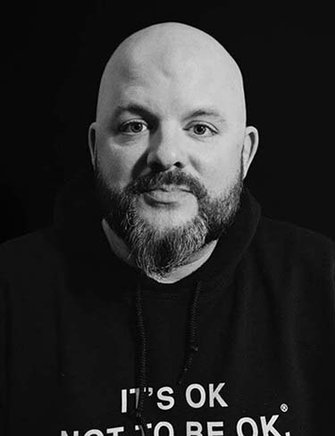
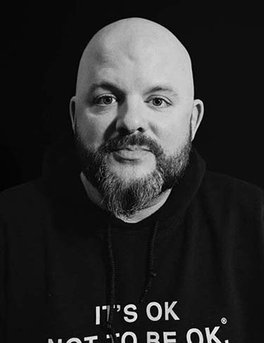

THE LIGHT
PROJECT
Raising the visibility of hope and resilience on mental health challenges through our stories.
The Light Project is a new online venue featuring portraits and lived experience stories. These literary and visual creations will highlight the visibility of hope and resilience as real people share their mental health challenges. The Light Project explores the vast spectrum of ‘lived experience’ intersections with mental health challenges. We aspire to connect communities with information, education, and inspiration to empower everyone to find all the available tools for resilience and hope.
 

JONNY BOUCHER
RYAN SHANNON
JOEL FRIEDERS
DR. NNEKA JONES TAPIA
Founder and CEO of HFTD
Father, Navy Veteran,
and Director of
Project R.E.D team
HFTD Marketing and
Events Director
Father, HFTD Director
of Public Policy
Psychologist, Inagural
Leader in Residence
for Chicago Beyond